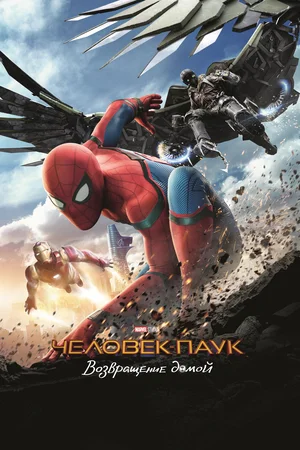
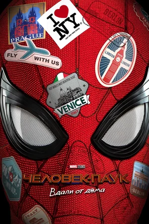

Человек-паук: Возвращение домой
После встречи с командой Мстителей Питер Паркер пытается жить обычной жизнью под опекой тёти Мэй. Но теперь за Питером приглядывает кое-кто ещё.
Смотреть

Человек-паук: Вдали от дома
Питер Паркер вместе с одноклассниками отправляется на летние каникулы в Европу. Однако отдохнуть приятелям вряд ли удастся.
Смотреть
Человек-паук: Нет пути домой
Жизнь и репутация Питера Паркера оказываются под угрозой, поскольку Мистерио раскрыл всему миру тайну личности Человека-паука.
СмотретьБиография
Томас Стэнли Холланд появился на свет 1 июня 1996 года в Кингстон-апон-Темсе, графство Суррей, в семье фотографа Николы (урождённая Фрост) и комика и писателя Доминика Холланда. У него есть три младших брата. Его бабушка по отцовской линии была родом из графства Типперэри, Ирландия, а дед по отцовской линии — с острова Мэн. Том живёт в Кингстоне-на-Темсе, недалеко от дома своих родителей и младших братьев. Поскольку его родители имеют творческие профессии, он часто вдохновляется ими. Он считает своего отца образцом для подражания, который неофициально работал у него менеджером благодаря своему опыту работы в индустрии.
Холланд получил образование в Донхеде, мужской католической подготовительной школе в Уимблдоне на юго-западе Лондона. В семь лет у него диагностировали дислексию. Родители отправили его вместе с братьями (чтобы они не чувствовали себя заброшенными) в частную школу, чтобы он мог получать необходимое внимание. Хотя Холланду нравилась новая школа, она начала истощать финансы его семьи. Холланд учился в Уимблдонском колледже, добровольной общеобразовательной школе иезуитов. потом в Лондонской школе исполнительского искусства и технологий в Кройдоне.
Во время взросления Холланд рассматривал несколько вариантов карьеры. В детстве он был поклонником Джанет Джексон и часто танцевал под её песни. Мать записала его на занятия танцами в частной школе, в которую тогда Холланд ходил. В подростковом возрасте Холланд некоторое время посещал столярную школу в Кардиффе, Уэльс. Он также подумывал стать учителем начальной школы, так как ему нравится общаться с детьми.
Танцевальную карьеру Том Холланд начал с исполнения хип-хопа в школе танцев Nifty Feet в Уимблдоне. В 2006 году он выступал со школьным танцевальным коллективом на фестивале в Ричмонде, где его заметил хореограф Линн Пейдж (который являлся коллегой Питера Дарлинга, хореографа фильма «Билли Эллиот» и одноимённого мюзикла).
После восьми прослушиваний и двух лет обучения Холланд был взят в труппу исполнителей мюзикла «Билли Эллиот» на роль Майкла Каффри, лучшего друга Билли. 28 июня 2008 года он дебютировал в этой роли на сцене. Своё первое выступление в главной роли Билли Эллиота Холланд дал 8 сентября 2008 года.
В сентябре 2008 года Холланд вместе с Таннером Пфлюгером появился в программе новостей на Channel 5 и дал своё первое телевизионное интервью. В следующем году он стал гостем шоу «Фактор комфортности» на телеканале ITV1. В стартовом выпуске 31 января Холланд вместе с Таннером Пфлюгером и Лейтоном Уильямсом исполнил версию эпизода Angry Dance (рус. Злой танец) из мюзикла «Билли Эллиот», после чего дал интервью ведущей Майлин Класс.
Холланд придумал и поставил танец пяти британских школьников, подготовив их к финальному выступлению на шоу «Фактор комфортности» 28 марта 2009 года.
8 марта 2010 года, в пятую годовщину мюзикла «Билли Эллиот», четыре актёра, исполнявшие роль Билли, включая самого Холланда, были приглашены на Даунинг-стрит, 10 на встречу с премьер-министром Гордоном Брауном. Холланд был исполнителем главной роли в мюзикле «Билли Эллиот», чередуя свои выступления с тремя другими исполнителями, вплоть до 29 мая 2010 года, когда он в последний раз в этой роли вышел на сцену лондонского театра Виктория-палас[англ.]. В 2011 году Холланд озвучил главного героя в британской версии анимационного фильма «Ариэтти из страны лилипутов», выпущенного японской студией Ghibli.
Холланд дебютировал в кино, исполнив роль Лукаса Беннетта в фильме «Невозможное» режиссёра Хуана Антонио Байона вместе с Наоми Уоттс и Юэном Макгрегором. Премьера фильма состоялась 9 сентября 2012 года на Международном кинофестивале в Торонто, после чего картина получила положительные рецензии критиков и, впоследствии, имела кассовый успех. Фильм собрал $ 180,3 млн по всему миру, а игра Холланда была отмечена несколькими наградами, такими как премия Американского Национального совета кинокритиков в категории «Актёрский прорыв года» и награда Лондонского кружка кинокритиков в категории «Самый многообещающий молодой английский актёр»[англ.].
Томас Холланд снялся вместе с Сиршой Ронан в драматическом фильме «Как я теперь люблю», который был выпущен в Великобритании 4 октября 2013 года. Кроме того, он исполнил роль юного четырнадцатилетнего Томаса Никерсона в фильме «В сердце моря» (2015) режиссёра Рона Ховарда.
В 2015 году актёр исполнил роль Грегори Кромвеля в мини-сериале «Волчий зал» телеканала BBC Two. 23 июня 2015 года было объявлено, что девятнадцатилетний Том Холланд утверждён на роль Питера Паркера / Человека-паука в кинематографической вселенной Marvel и стал таким образом самым юным актёром, исполнившим эту роль. Кроме Холланда, на роль Человека-паука претендовали Тимоти Шаламе, Эйса Баттерфилд, Нат Вулф и Лиам Джеймс. Предыдущим исполнителям роли, Тоби Магуайру и Эндрю Гарфилду, на момент начала съёмок было больше 20 лет.
Том поразил всех необычными акробатическими способностями и невероятной пластичностью, что в итоге позволило актёру получить роль. Он дебютировал в этой роли в фильме «Первый мститель: Противостояние» (2016). Фильм получил положительные рецензии критиков и имел коммерческий успех, собрав $ 1,1 млрд в мировом прокате, что сделало его самым кассовым фильмом 2016 года.
В 2016 году Холланд снялся в роли Джека Фосетта, сына главного героя в исполнении Чарли Ханнэма, в драматической картине режиссёра Джеймса Грэя «Затерянный город Z». Фильм вышел на экраны в апреле и заслужил благоприятные рецензии критиков. В том же году он снялся в картине «Человек-паук: Возвращение домой», повторив свою роль из фильма «Первый мститель: Противостояние». Фильм вышел на экраны 7 июля. После исполнения роли Питера Паркера в этом фильме, Холланд был включён в Книгу рекордов Гинесса и получил титул «самого молодого актёра, исполнившего главную роль в кинематографической вселенной Marvel».
12 февраля 2017 года на 70-й церемонии вручения премий BAFTA двадцатилетний Том Холланд одержал победу в категории «Восходящая звезда», став третьим самым юным обладателем данной награды после американской актрисы Кристен Стюарт и британской актрисы Бакки Бакрэй, которые получили эту награду в девятнадцатилетнем возрасте. Награда вручается начинающим молодым актёрам любой национальности, чей талант снискал признание публики, но не предназначена для дебютантов или детей-актёров. Возраст номинантов, как правило, колеблется от 18 до 32 лет. Это единственная награда академии, которая присуждается по результатам зрительского голосования.
Холланд вновь сыграл роль Человека-паука в кроссоверах о Мстителях: «Война бесконечности» (2018) и «Финал» (2019). 2 июля 2019 года на экраны вышел сиквел «Возвращения домой» — «Человек-паук: Вдали от дома». Холланд подписал контракт на шесть картин с Marvel Studios — три фильма франшизы «Человек-паук» и три появления в других проектах студии. Актёра пригласили на роль Сэмюэля Инсулла в фильме Альфонсо Гомеса-Рехона «Война токов», который вышел 22 декабря 2017 года. В мае 2017 года было объявлено, что Холланд исполнит роль молодого Нейтана Дрейка в экранизации игры Naughty Dog Uncharted. В 2019 году Холланд озвучил главную роль Уолтера Беккета, неловкого выпускника MIT и молодого учёного, в мультфильме «Камуфляж и шпионаж», где партнёром актёра выступил Уилл Смит. Картина была тепло встречена критиками и зрителями. Питер Брэдшоу из The Guardian дал фильму три звезды из пяти, назвав его «занимательно-семейным приключением», и высоко оценил вокальную работу Смита и Холланда.
В 2020 году Холланд озвучил главную роль в мультфильме «Вперёд». Картина вышла в мировой прокат 4 марта 2020 года и была хорошо оценена критикой, но собрала плохую кассу по причине того, что период её кинопроката пришёлся на начало пандемии COVID-19, из-за чего кинопрокат был свёрнут раньше намеченного срока. Холланд появился в роли верного пса в очках по имени Джип в приключенческой комедии «Удивительное путешествие доктора Дулиттла», которая является ремейком одноимённого фильма 1967 года. Исполнил главную роль Арвина Расселла в психологическом триллере Антонио Кампоса «Дьявол всегда здесь», выход которого состоялся 16 сентября 2020 года на Netflix. Съемки фильма полностью были завершены 15 апреля 2019 года.
Холланд снялся в главной роли в криминальной драме братьев Руссо «По наклонной», которая вышла 26 февраля 2021 года в кинотеатрах в ограниченном прокате и 12 марта на видеосервисе Apple TV+. 19 апреля 2020 года Энтони Руссо заявил, что Холланд основательно готовился к роли Уокера и что его работа достойна премии «Оскар». Картина, основанная на автобиографическом романе[англ.], рассказывает историю отставного армейского медика Николаса «Нико» Уокера[англ.], вернувшегося с Иранской войны с посттравматическим стрессовым расстройством и начавшего грабить банки, чтобы поддержать свою зависимость от опиатов и опиоидов. Том Холланд и английская актриса Дейзи Ридли исполнили главные роли Тодда Хьюитта и Виолы Ид в одноимённой экранизации книги Патрика Несса, постановщиком которой выступил Даг Лайман. Съёмки фильма начались 7 августа 2017 года. Компания Lionsgate выпустила фильм в США 5 марта 2021 года. В октябре 2020 года Том Холланд начал сниматься в картине «Человек-паук: Нет пути домой», съёмки которой завершились в конце марта 2021 года.
В октябре 2024 года Холланда утвердили на главную роль в предстоящем фильме Кристофера Нолана вместе с Мэттом Деймоном. Фильм планируют выпустить 17 июля 2026 года. Также у Холланда запланированы съёмки в четвёртом фильме про Человека-паука и «Мстителях: Судный день».